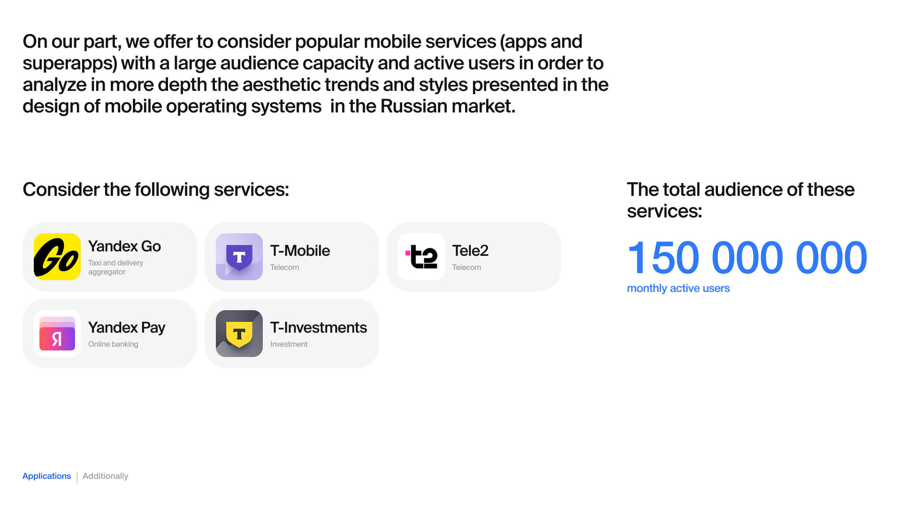
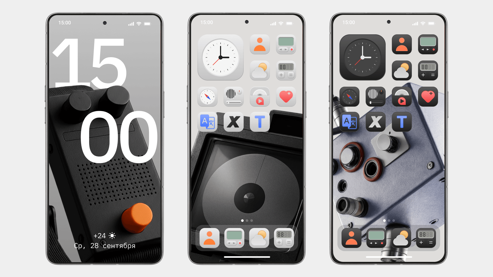

О проекте
Компания Transsion активно начала наращивать влияние на рынке российских мобильных устройств. Для этого специально для пользователей из РФ компания захотела сделать кастомный дизайн операционной системы HiOS, который будет отражать социально-культурный аспект жителей страны. За счет такой кастомизации смартфоны Tecno бы разительно отличались от своих конкурентов, что должно привести к повышению узнаваемости бренда среди жителей РФ.
Проект проходил в формате тендера между несколькими дизайн-студиями, который мы выиграли.

Задача
Разработать дизайн операционной системы, которая отражала бы культурные особенности жителей РФ.
Цели проекта
- Провести глубокое исследования операционных систем, представленных на рынке.
- Разработать концепт операционной системы, которая по существу отражала бы социально-культурные особенности жителей России.
- Масштабировать концепт на все элементы дизайн-системы: иконки, always on display, виджеты и т. д.
Моя роль
На проекте я отвечал за исследовательскую и концептуальную часть. Что я сделал:
- Провёл анализ мобильных операционных систем.
- Выявил ключевые дизайн-паттерны интерфейсов.
- Подготовил аналитическую презентацию.
- Предложил дополнительное исследование мобильных приложений.
- Разработал дизайн-концепт системы.
Этап: анализ ОС

Для анализа мы выбрали 10 операционных систем и оболочек, наиболее широко представленных в РФ: IOS (Iphone), HyperOS (Xiaomi), OneUI (Samsung), OxygenOS (OnePlus), ColorOS (Oppo), MagicOS (Honor), FunTouchOS (VIVO), HarmonyOS (Huawei), Pixel UI (Google), Nothing OS (Nothing).
Цель анализа:
- Определить визуальные тренды интерфейсов.
- Найти паттерны иконок и виджетов.
- Понять подходы к кастомизации.
Инсайты исследований ОС
1. Кастомизация стала ключевой функцией ОС.
Современные системы позволяют пользователям:
- Менять размер иконок.
- Настраивать виджеты.
- Менять цветовую палитру интерфейса.
2. Интерфейсы постепенно уходят от скевоморфизма.
Большинство систем используют:
- Минималистичные иконки.
- Простые формы.
- Нейтральные цветовые палитры.
3. Физичность интерфейса возвращается.
Некоторые системы используют эффекты:
- Стеклянных поверхностей.
- Мягких теней.
- Глубины элементов.
Дополнительное исследование

Согласно брифу, на этом этап анализа можно было закончить. Но я решил пойти дальше: для полноты картины я предложил дополнительно сделать анализ дизайна мобильных приложений, а также проанализировать различия между дизайном в России и Китае. Такого запроса не было со стороны клиента, но такой глубокий анализ позволил бы сделать работу качественнее и лучше понять потребности российской аудитории.
Мы изучили интерфейсы популярных российских приложений:
- Яндекс Go
- Яндекс Pay
- Т-Банк
- Tele2
- Т-Инвестиции
Аудитория этих сервисов превышает 150 миллионов пользователей, поэтому их интерфейсы отражают актуальные паттерны российского рынка.
Инсайты из анализа приложений
Российские интерфейсы часто используют:
- Минималистичные элементы.
- Мягкие градиенты.
- Цифровой реализм.
- Аккуратные 3D-элементы.
Культурный анализ

Мы также сравнили особенности китайского и российского дизайна интерфейсов.
Китайский дизайн:
- Яркие насыщенные цвета.
- Плотная информационная структура.
- 3D-иконки и декоративные элементы.
Российский дизайн:
- Минимализм.
- Спокойная цветовая палитра.
- Плоские иконки.
- Акцент на функциональности.
Этот анализ помог определить направление будущей концепции.
Концепция

Я предложил концепцию Industrial Revolution.
Она вдохновлена:
- Российской инженерной школой.
- Индустриальным дизайном.
- Эстетикой технологических систем.
Основная идея интерфейса:
- Точность.
- Функциональность.
- Инженерная эстетика.

Визуальные принципы концепта:
- Минимализм: интерфейс простой и понятный.
- Инженерная эстетика: формы и элементы вдохновлены промышленным дизайном.
- Функциональность: каждый элемент выполняет практическую задачу.
Вторая итерация концепта
После первой презентации клиент выбрал 2 концепта из 5: мой и концепт арт-директора.
Клиент попросил усилить культурную составляющую.
Концепция ver 2.0

Я переработал концепцию и представил обновлённую версию под названием Technical Aesthetics.
Концепт вдохновлён советским промышленным дизайном и журналом «Техническая эстетика».
Визуальный стиль сочетает:
- Индустриальные формы.
- Ностальгические мотивы.
- Современный минимализм.



Результат
Этот проект дал мне опыт:
- Проектирования интерфейсов системного уровня.
- Проведения масштабных дизайн-исследований.
- Разработки концепций для международных продуктов.